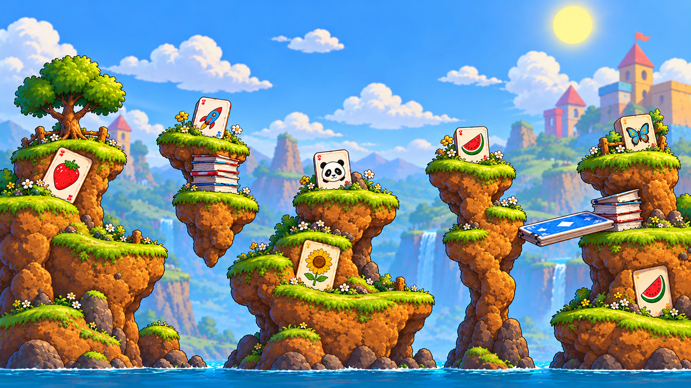

TANGLE TUSSLEANIMATION LAB · MAP REVIEW
Memory Match V4
Unified solid terrain · 5,760 × 3,240

LIVE SOURCE SNAPSHOT · 28 OCT 2026
FIT MAP · 100%
☝Pinch to zoom · Drag to explore
Rotate your phone for a wider overview
Rotate your phone for a wider overview